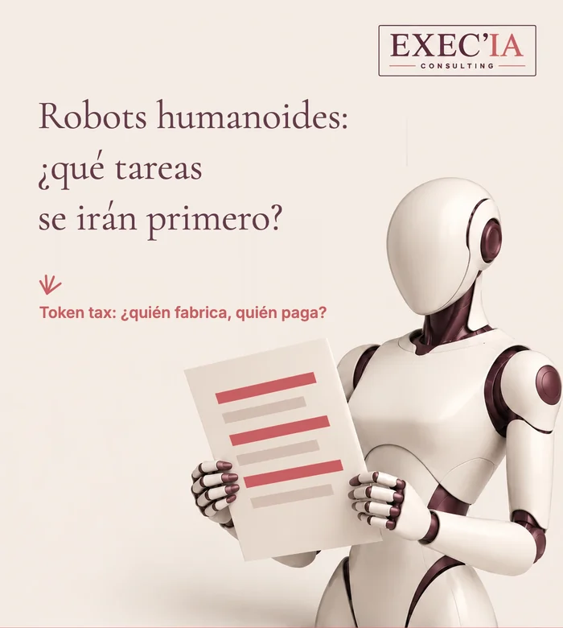

Robots humanoides: ¿qué tareas
se irán primero?
Versión breve →
Empleados, mandos, directivos: un robot humanoide asume tareas, rara vez un oficio entero.
El servicio estadístico del Ministerio de Trabajo francés, la Dares, contabiliza 457.500 empleos vacantes en el sector privado en el segundo trimestre de 2026. Los humanoides irán primero a esos puestos difíciles de cubrir: cargar, clasificar, ordenar, trabajar de noche.
Dos preguntas van más allá de la empresa: ¿quién fabrica estos robots? ¿Y quién financia la protección social cuando una parte del trabajo deja de pasar por salarios? La «token tax» ha entrado en el debate.
El minidiagnóstico de este artículo mide en 2 minutos qué parte de su semana podría confiarse a un robot.

¿Dirige una pyme, encabeza un equipo o se pregunta qué será de su propio puesto?
Este artículo es para usted.
Un robot humanoide no se quedará con su oficio de golpe. Lo irá mordisqueando, tarea a tarea. La verdadera cuestión es cuáles, y en qué orden.
Un Reel de la cadena francesa LCI hablaba hace poco de 300.000 puestos sin cubrir en Francia. El servicio estadístico del Ministerio de Trabajo, la Dares, cuenta más: 457.500 empleos vacantes en el sector privado en el segundo trimestre de 2026, según su cifra revisada del 15 de septiembre.
Un empleo vacante no siempre es un puesto imposible de cubrir. La Dares incluye puestos desocupados, puestos recién creados y puestos a punto de quedar libres. La cifra no dice, por tanto, «faltan tantas personas». Dice: muchas empresas están buscando gente, ahora mismo.
🔑 ¿Por qué pensar en tareas y no en oficios?
Porque un oficio es un conjunto. Un preparador de pedidos mueve cajas, pero también detecta un error de etiqueta, tranquiliza a un cliente por teléfono, forma a un temporal. Un robot puede asumir la primera tarea. Las siguientes exigen criterio, relación y responsabilidad.
Pensar en oficios lleva a dos errores opuestos: creer que nada cambiará, o creer que todo desaparecerá. Pensar en tareas permite ver lo que de verdad se mueve, puesto por puesto.
¿A qué oficios apuntarán primero los robots humanoides?
A aquellos en los que las tareas son físicas, repetitivas o penosas, en lugares pensados para personas: almacenes, talleres, trastiendas de comercios, obras, explotaciones agrícolas y centros sanitarios para el transporte de material.
Suelen ser también los puestos más difíciles de cubrir. El robot no llega primero para ocupar un lugar ya ocupado. Llega para cubrir un puesto que la empresa no consigue llenar: el turno de noche, la manipulación pesada, las tareas de riesgo.
Tres preguntas para cada puesto:
- ¿Qué tareas podría asumir un robot?
- ¿En qué se convertirá el oficio sin ellas?
- ¿Qué puesto vacante, a su alrededor, podría cubrir un robot?
¿Por qué nada de esto es inminente?
El entusiasmo es real; la realidad, más lenta. Ni siquiera Apple fabricaría sus robots en serie antes de 2028, según el analista Ming-Chi Kuo. Los humanoides de hoy siguen siendo caros, lentos en gestos que una persona hace sin pensar y frágiles ante lo imprevisto.
El calendario deja, por tanto, margen. Ese tiempo sirve para prepararse, no para esperar.
¿Qué buena noticia hay para quienes conservan su empleo?
Un robot produce sin salario, sin horas extra y sin subida anual. Una vez amortizado, pesa como un coste previsible, lo que puede frenar parte de las subidas de precios.
Con una condición: que el tiempo liberado se dedique a tareas más útiles e interesantes, y no a sumar más carga. Es una decisión de la dirección, no un efecto automático.
¿Quién fabrica estos robots?
En el primer semestre de 2026, el 97 % de los robots humanoides entregados en el mundo salió de fábricas chinas. Los dos primeros fabricantes, AgiBot y Unitree, son chinos.
La pregunta se plantea, pues, para Francia y para Europa: diseñar y explotar sus propios robots, o comprarlos llave en mano, junto con los datos que recogen en nuestros talleres y almacenes. Para una pyme, es también una cuestión práctica: ¿quién se encargará del mantenimiento, los repuestos y las actualizaciones?
¿Quién financia la protección social?
En Francia, las pensiones y la protección social se basan en gran parte en las cotizaciones sobre los salarios. Un robot no paga ninguna, y se amortiza como un gasto.
Bill Gates lo resumió en un largo texto publicado a finales de agosto de 2026: cuando usted contrata, paga cotizaciones sobre el salario; cuando compra un robot, a menudo puede deducirlo de inmediato. Sin pretenderlo, la fiscalidad empuja a sustituir a las personas por máquinas.
¿Qué es la «token tax»?
Un token es la unidad de texto que procesan los modelos de IA, y la que facturan en cada petición. La idea consiste en aplicar un pequeño porcentaje sobre esos tokens, es decir, sobre el uso de la IA, y no solo sobre los beneficios de las empresas que la desarrollan.
¿En qué punto está el debate?
1) Bill Gates defiende gravar los tokens de IA y los robots.
2) En Estados Unidos, un proyecto de ley presentado en el Congreso en agosto de 2026, el AI Tax and Work Protection Act, propone un tipo del 2 % sobre el valor de los tokens cuando el paro está en el 5 % o menos, que sube a medida que sube el paro.
3) Lo recaudado financiaría empleos y reconversión profesional. Algunos ven en ello la base de una renta universal.
La idea no es nueva. Ya en 2017 se debatía en Francia y en el Parlamento Europeo un impuesto sobre los robots. Lo que cambia es la base: el uso de la IA se mide ahora token a token.
¿Qué puede hacer una pyme desde ya?
🎯 Tres gestos, sin invertir un euro.
1) Enumerar las tareas de cada puesto y el tiempo que ocupan.
2) Detectar los puestos difíciles de cubrir y qué los hace penosos.
3) Decidir qué debe seguir siendo humano, antes de que la pregunta llegue bajo presión.
El minidiagnóstico de abajo da el primer paso con usted, en dos minutos.
💬 Gravar la IA para proteger a quienes pierden su trabajo:
¿buena idea, o freno para nuestras empresas?
Fuentes: Dares, empleos vacantes en el segundo trimestre de 2026 (cifra revisada del 15 de septiembre de 2026); Journal du Web, 11 de agosto de 2026; Fortune, 26 de agosto de 2026; Fortune, 1 de septiembre de 2026; Ming-Chi Kuo, vía iThinkDiff; Euronews, 29 de septiembre de 2026.
Minidiagnóstico ROBOT · 2 minutos
¿Qué tareas confiaría
a un robot humanoide?
Clasifique sus tareas según el nivel de intervención deseado:
Robot, Compartido o Humano.
Solo clics; sus elecciones se quedan en su navegador, no se envía nada.
Sus tareas, por clasificar
Para cada tarea, estime el tiempo dedicado por semana y elija: Robot, Compartido o Humano. Los valores mostrados son un ejemplo, para sustituir por los suyos.
El tiempo no asignado cuenta como tiempo que sigue siendo humano.
El tiempo liberado iría más bien a…
Varias opciones posibles.
¿Qué puesto difícil de cubrir podría ocupar un robot en su empresa?
Varias opciones posibles.
Su síntesis
Confiar primeroGuarde su diagnóstico:
no se registra en ningún sitio.
Después péguelo en un correo, una nota o un mensaje.
Ejemplo orientativo: la buena clasificación depende de su empresa.
Este minidiagnóstico ayuda a reflexionar; no mide la viabilidad técnica.
Leer el artículo completounas 3.000 palabras
Qué es un robot humanoide, en 2026
Un robot humanoide es una máquina con forma humana: dos brazos, manos, a menudo dos piernas y una cabeza que lleva cámaras. Combina tres piezas. Un cuerpo mecánico, sensores que perciben el entorno y un «cerebro» de IA que decide qué gesto hacer.
Esto último es lo que ha cambiado. Durante décadas, un robot industrial repetía un gesto programado al milímetro, dentro de una jaula, sin apartarse nunca de él. Los modelos de IA recientes permiten a un humanoide aprender un gesto por demostración, reconocer un objeto que nunca ha visto y adaptarse a una pieza ligeramente desplazada.
¿Por qué una forma humana?
Porque nuestros lugares de trabajo están hechos para personas. Escaleras, manillas, estanterías, carros y herramientas se diseñaron para nuestras manos y nuestra estatura. Un robot con forma humana puede, en teoría, integrarse en ellos sin reconstruir el almacén o el taller.
Ese es también su límite. En un espacio pensado para él, un robot especializado, un brazo fijo o un carro autónomo suele hacerlo mejor y por menos dinero. El humanoide tiene sentido donde el entorno cambia, donde las tareas varían y donde nadie quiere reacondicionarlo todo.
Lo que saben hacer, y lo que aún no
Hoy, los humanoides más avanzados saben:
desplazar y ordenar cajas o paquetes;
alimentar una máquina o una línea;
realizar controles visuales sencillos;
hacer inventario en un lugar conocido.
Todavía les cuesta lo que una persona hace sin esfuerzo: agarrar un objeto blando o resbaladizo, desenvolverse en un espacio abarrotado, entender una instrucción ambigua, reaccionar ante lo imprevisto. Su autonomía se cuenta a menudo en pocas horas, y su ritmo sigue por debajo del de un operario entrenado.
Un titular de Euronews de finales de septiembre de 2026 lo resume bien: el entusiasmo por los humanoides choca con la realidad. La promesa es fuerte; el despliegue a gran escala llevará años.
El verdadero cálculo económico
Un robot no cuesta solo su precio de compra. Hay que sumar la integración en las instalaciones, la seguridad a su alrededor, el mantenimiento, los repuestos, las actualizaciones de software, la formación de quienes lo supervisan y el tiempo de parada cuando se avería.
Muchos fabricantes ofrecen ya el alquiler por uso, según el modelo «robot as a service»: una cuota mensual con el mantenimiento incluido. Para una pyme, suele ser la única forma razonable de probar sin inmovilizar un capital que no recuperará.
La buena pregunta no es «¿cuánto cuesta un robot?», sino «¿cuánto cuesta una hora de tarea realizada, comparada con una hora de trabajo humano, a igual calidad?». Mientras ese cálculo no se haga tarea por tarea, toda decisión es una apuesta.
El cuerpo y el cerebro
Se habla a menudo de los robots como de una revolución mecánica. Es, ante todo, una revolución de la IA. El cuerpo progresa, pero lo que cambia las reglas del juego es la capacidad del robot para entender lo que ve y elegir un gesto.
Para un directivo es una buena noticia: las preguntas son las mismas que para una herramienta de IA de software. Qué tarea, qué datos, qué control humano, quién responde si se equivoca. La única diferencia es que aquí el error puede herir a alguien.
Sector por sector
Logística. Es el terreno más avanzado: mover cajas, preparar pedidos, cargar carros. Los almacenes recientes ya están muy automatizados; el humanoide apunta a las instalaciones más antiguas, que nadie quiere reconstruir.
Industria. Alimentar una máquina, desplazar piezas al final de la línea, realizar un control visual. El turno de noche y los puestos penosos van primero.
Salud y cuidados. Transportar ropa, comidas y material, ayudar en ciertos desplazamientos. El cuidado, la escucha y el trato siguen siendo humanos. Bill Gates propone incluso reservar algunos oficios, como el cuidado de personas mayores, a seres humanos, aunque las máquinas lleguen a poder hacerlos.
Construcción, comercio, agricultura. Cargar pesos, limpiar una obra, reponer de noche, desherbar, recolectar ciertos cultivos. Siempre se van primero los gestos repetitivos y penosos, rara vez el saber hacer.
Lo que cambia para los empleados
Cuando una tarea desaparece, el oficio no desaparece necesariamente. Se recompone. El carretillero que ya no carga pasa a supervisar tres robots, resolver incidencias y formar a los recién llegados. El preparador de pedidos se convierte en el especialista de los pedidos complicados que la máquina no sabe tratar.
Esta recomposición no tiene nada de automática. Exige formación, reconocimiento y, a menudo, una evolución del salario. Sin ello, el robot se vive como una amenaza, y la adhesión se hunde antes incluso de la puesta en marcha.
El papel del mando intermedio
Es quien verá el robot todos los días. Sabrá antes que nadie si la máquina hace ganar tiempo o lo hace perder. Implíquelo desde el principio: en la elección de las tareas, en la preparación del piloto y en las normas de seguridad. Un mando al que no se ha consultado se convierte, sin quererlo, en el primer freno.
Seguridad y marco jurídico
Un robot que se desplaza entre los empleados plantea, en primer lugar, una cuestión de seguridad. En Europa, el nuevo Reglamento de Máquinas se aplicará a partir del 20 de enero de 2027 y regula de forma explícita las máquinas cuyo comportamiento evoluciona gracias a la IA.
El reglamento europeo de IA, el AI Act, clasifica como de alto riesgo los sistemas de IA que actúan como componente de seguridad de una máquina. Las cámaras integradas también graban a personas: se aplica el RGPD, con información a los empleados y límites a los datos conservados.
En Francia, las empresas de al menos 50 empleados deben consultar a su comité social y económico (CSE) antes de introducir una nueva tecnología que modifique las condiciones de trabajo. Mejor verlo como una oportunidad: es el momento de explicar, escuchar las inquietudes y fijar las reglas antes de que los rumores las fijen por usted.
La soberanía, en concreto
Con el 97 % de las entregas mundiales procedentes de China en el primer semestre de 2026, la soberanía no tiene nada de abstracto. Un robot conectado recoge imágenes, planos de las instalaciones y ritmos de trabajo. ¿Adónde van esos datos? ¿Quién puede actualizar el software, o apagarlo?
Para una pyme, bastan tres reflejos para empezar: preguntar dónde se alojan los datos, comprobar que el robot puede funcionar sin conexión permanente y asegurarse de que un proveedor local se encarga del mantenimiento. Estas preguntas no le convierten en experto en geopolítica. Le evitan una dependencia que descubriría demasiado tarde.
La «token tax», en detalle
El proyecto de ley estadounidense presentado en agosto de 2026 prevé dos tipos de partida cuando el paro está en el 5 % o menos: el 2 % sobre el valor de los tokens y el 3 % sobre los ingresos de los servicios de IA. Cuanto más sube el paro, más suben los tipos. Lo recaudado iría a empleos en vivienda, infraestructuras, cuidado infantil y atención a mayores.
Bill Gates, por su parte, propone gravar los tokens y los robots para financiar la reconversión y reforzar las redes de protección. También defiende empleos «reservados a personas», que la sociedad decidiría mantener humanos aunque una máquina pudiera ocuparlos.
Los argumentos a favor:
el impuesto sigue al lugar donde se crea el valor;
corrige la ventaja fiscal que tiene la máquina sobre la persona;
financia la transición en el momento en que se produce.
Los argumentos en contra:
gravar el uso puede frenar la innovación, sobre todo en las pequeñas empresas;
los tokens se trasladan fácilmente de un país a otro;
el coste puede recaer en el usuario final, es decir, en las propias pymes.
Para una pyme europea, lo que está en juego es concreto: si un impuesto así llega a aprobarse, se sumará al precio de las herramientas de IA que utiliza. Mejor saber desde ya cuáles crean realmente valor.
¿Y la renta universal?
La idea vuelve con cada ola de automatización. Finlandia la experimentó en 2017 y 2018 con dos mil personas desempleadas: el bienestar de los beneficiarios mejoró, mientras que el efecto sobre el empleo fue modesto. El debate gira menos en torno al principio que a la financiación. Ahí es precisamente donde entra la «token tax».
Las preguntas que hay que hacer a un proveedor
Antes de cualquier prueba, seis preguntas sencillas ahorran meses:
¿en qué tareas concretas ha demostrado ya el robot su valía, y dónde?
¿qué ritmo real tiene por hora, comparado con un operario?
¿qué ocurre cuando no entiende una situación?
¿adónde van las imágenes y los datos que recoge?
¿quién interviene en caso de avería, y en cuánto tiempo?
¿se puede cancelar el alquiler sin penalización tras el piloto?
Un proveedor serio responde sin rodeos, con cifras medidas en otros clientes. Si solo le hablan de demostraciones, ya sabe a qué atenerse.
Lo que se preguntan sus equipos
No se preguntan si el robot es eficaz. Se preguntan qué va a cambiar para ellos: «¿conservaré mi puesto?», «¿tendré que aprender a manejarlo?», «¿quién será responsable si se equivoca?».
Responda antes de que se lo pregunten. Diga con claridad qué tareas se contemplan, cuáles no, y qué se hará con el tiempo liberado. Un equipo que conoce las reglas acepta mucho mejor la prueba que un equipo que descubre un robot un lunes por la mañana. El primer piloto es también una prueba de confianza: toda la empresa observará qué hace usted con el tiempo ganado.
Lo que aconsejo a un directivo de pyme
Un método en cinco pasos, sin compra previa:
cartografiar las tareas de dos o tres puestos clave, con el tiempo que ocupan;
señalar las que son penosas, repetitivas o difíciles de cubrir;
decidir con los equipos qué debe seguir siendo humano;
calcular el coste de una hora de tarea robotizada, alquiler y mantenimiento incluidos;
si las cuentas salen, lanzar un piloto de 90 días sobre una sola tarea.
Al final del piloto, sabrá lo que el robot aporta en su empresa, no en la sala de demostraciones de un fabricante. Sabrá también cómo lo han vivido sus equipos. Esa doble prueba es la que permite decidir, o renunciar sin remordimientos.
Un ejemplo tipo
Tomemos una pyme logística de sesenta personas que ya no encuentra preparadores para el turno de noche. En lugar de comprar un robot, la dirección enumera las tareas nocturnas: una de cada dos consiste en mover cajas de una zona a otra.
Alquila un robot durante tres meses, para esa única tarea, con un empleado voluntario encargado de supervisarlo. Al final del piloto, el puesto de noche sigue siendo humano, pero cambia de naturaleza: menos carga física, más control. La contratación vuelve a ser posible. El robot no ha sustituido a un empleado; ha hecho que un puesto sea llevadero.
Lo que los robots nos piden, en el fondo
Menos fascinación y más método. Los robots humanoides llegarán por las tareas, una a una, y primero allí donde faltan manos. Las empresas que hayan hecho su cartografía de antemano elegirán. Las demás sufrirán el calendario de los fabricantes.
La cuestión no es si un robot puede hacer su trabajo. Es decidir, antes de invertir, qué debe seguir siendo humano.